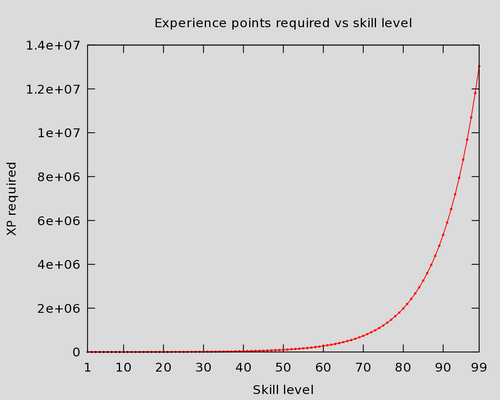
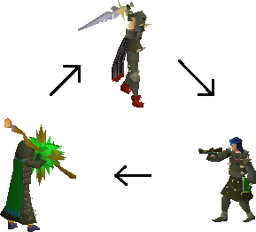

Welcome to Oldschool RuneScape! ⚔️
"You don't quit RuneScape, you only take breaks" - Anonymous 😴
I'm sad to inform you that this is the last game you'll ever truly play.
What is OSRS?
OSRS is a MMORPG set in the world of Gielinor. It's a point-and-click game that involves you joining in various game-loops to gain experience towards skills.
Some loops are more AFK and offer lower amounts of experience, while others are more intensive and more rewarding.
Why are there 2 RuneScapes?
The original game you played as a kid is still going on today. It's the base game, also known as RS3. RS3 is a clusterfuck, with a totally different combat system (as well as many, many pay to win microtransactions).
OldSchool is what you remember playing as a kid. It was launched in 20XX in an attempt to get old players back in with some nostalgia. Oldschool has surpassed RS3 in player count and is evolving with every week.
Fun fact! A single membership covers both games, so if you'd like to try RS3 you can with the same account details. (You don't wan to)
There's no better time to start
The game has never been more accessible. The game isn't nearly as grindy, with lots of "skilling bosses" added to make skilling more engaging.
The mobile client JUST got a face lift, bringing a suite of QoL improvements.
It seems Jagex is leaning towards making the game more laidback, with ever growing QoL tweaks.
That being said, it's still RuneScape. Your entire experience is grinding out subgoals to help make your bigger goals a little easier. Nearly everything is locked behind a requirement, from transportation to spells to items. Shockingly, this makes the game way more rewarding.
Skills
Skills are the bread and butter of RS. Most actions earn XP towards a related skill. Early levels should be accomplished by Quests, which get rid of early level grinding which is very slow.
What Quests should I do? Check out the Optimal Quest here
The most efficient way to level a skill is (contrary to Reddit's opinion) is entirely up to you. Again, some methods are more engaging (read: sweaty) and others can be done from your phone while at the Doctor's office.
Check the OldSchool wiki to see the various methods you can try.
Brief summary of every skill
| Skill | How it effects gameplay |
|---|---|
| Attack | Lets you wield stronger weapons, makes your hits more accurate |
| Strength | Determines how hard you hit |
| Defense | Determines the chance of an attack missing and how much it hits for |
| Ranged | Determines accuracy and damage for ranged combat |
| Prayer | Unlocks buffs you can toggle on in battle (Super OP) |
| Magic | Determines accuracy and damage for Magic combat |
| Runecrafting | Crafting Runes of varying tiers |
| Mining | Unlocks new ores, tools |
| Smithing | Smelt ores into tools of varying tiers |
| Fishing | Chance of catching fish, what type of fish you can catch |
| Cooking | Chance of burning food, what kind of food you can cook |
| Firemaking | Literally useless |
| Woodcutting | Unlocks new trees (logs), axes |
| Agility* | How fast your run energy depletes and regenerates |
| Herblore* | Make different types potions |
| Thieving* | Pickpocket NPCs, chances of success, as well some chests |
| Fletching* | Used to make ammo for ranged |
| Slayer* | Contract kills (go kill X of Z monster) |
| Farming* | Grow new types crops and herbs |
| Construction* | Build new items for your Player Owned House |
| Hunter* | Allows you to catch certain NPCs and Imps |
* Members skill
Skilling Activities
OS is shifting towards a "social skilling game," which just means there's big minigames you can play on dedicated worlds. Some are bosses, some are contract work, most are just alternative ways to train a skill.
Experience
Not a lot to say here, it's pretty easy to understand.
What's not easy to understand, is how the halfway point to level 99 is actually level ~91.
The experience required between levels grows at an astonishing rate. Below is the difference between levels, graphed linearly.
| 😅 |
|---|
|  |
What makes questing OP is that you get lumps of XP that hurdle you through the early game.
You can check out the table here
Quests
Quests are great. Some people hate them, but they're pretty cute. The cutscenes are fun and dialog is usually witty.
Without the Quest Helper plugin for RuneLite, you will need to depend on the wiki to help you through quests. Do not try to raw-dog quests. It's a tremendous waste of time and the quests are not intuitive enough for you to brute force.
Check out the Optimal Quest here
Combat
There are 6 combat skills. Attack, Strength, Defense, Hit Points, Ranged and Magic.
They help build the 3 combat styles: Melee, Ranged, and Magic. You level these skills by using them in combat.
How Combat works in OS
In OS, the game runs on "ticks." Every game tick progresses the game forward, and all events occur on a tick. Each tick is 0.6s.
The Rune Scimitar, for example, has a speed of 4. This means it hits every 2.4s (0.6 * 4).
- If you inflict damage, a bright red hitsplat will appear over the monster you attacked. This is how much damage you inflicted.
- Damage is calculated just before an attack animation occurs. NOT WHEN THE HITSPLAT APPEARS.
- This is the core mechanic behind lazy prayer-flicking. You activate an overhead Prayer just before they attack and deactivate it right after they strike. This way, you have a chance of negating the damage and not drain any prayer points. Prayers are covered more in the next section.
- If you miss, a bright blue 0 hitsplat will appear.
- If any hitsplat is duller in appearance, this is someone else's attack.
Combat skills explained (again)
| Skill | How it effects gameplay |
|---|---|
| Attack | Determines your accuracy, or if your hit will land. |
| Strength | Determines how hard you hit if successful, and directly increases your melee max hit. |
| Defense | Determines how much of a landing melee attack is negated. |
| HP | Determines how many hit points you have |
| Ranged | Determines the max hit and accuracy of ranged attacks. Your ranged max hit is also influenced by strength. |
| Magic | Determines the max hit and accuracy of magic attacks. |
On top of effecting your accuracy and max hits, higher levels allow you to use more powerful weapons or spells.
What order should I max the melee skills?
Because strength increases your max it, it's most efficient to max it first. With that in mind, you do need higher Attack to equip better weapons.
Leveling any combat is a slow, long-haul skill. Don't expect any combat skill maxed for a long time.
How do I train combat?
As soon as you can, complete the Waterfall Quest.
This will boost your Strength and Attack levels to 30+, a huge jump with little to no actual combat. As outlined in the Quests section, quest rewards are most beneficial early in your accounts lifetime.
Combat Triangle
This is combat triangle. I literally don't think about it. I might be bad, but idk figured I'd mention it.
I typically equip gear that protects againt my opponent's damage type and a weapon that they're weak to.
Always check the wiki to see what kind of stats you're up against.
| The combat triangle |
|---|
|  |
Prayers
Prayers grant a buffs at the cost of draining your prayer points. Similar to mana in other games. Your max prayer points, similarly to your hp, is your prayer level.
You train Prayer by doing various rituals, like burying bones or offering them are particular altars.
Most early Prayers are not very useful. Your major object with regard to Prayer is unlocking Overhead Prayers.
Overhead prayers
Overhead Prayers are insanity OP. They mitigate most of (if not all) damage of a particular type. They're outlined below
| Prayer | Level Req. | Shorthand | What it negates |
|---|---|---|---|
| Protect from Magic | 37 | Protect from Magic | Magic damage |
| Protect from Missiles | 40 | Protect from Range | Ranged damage |
| Protect from Melee | 43 | Protect from Melee | Melee damage |
Grand Exchange (GE)
This is the auction house. You can sell and buy most items, with a 1% tax for sellers.
You will spend a lot of your time at the GE. Some skills are considered "Buyable Skills." This just means you buy the supplies you need (like mixing potions or carving arrows) to level skills like Crafting, Fletching, Magic, Herblore, etc.
Other skills are quite profitable, like Slayer. You'll use these skills to fund your buyable, making the game go by quicker. Buyable Skills are great for watching movies or YouTube.
Transportation
Getting around in the early game if fucking brutal. Let's talk about some of the ways you can travel.
While using RuneLite, open your World Map. All modes of transportation can be found with icons telling you how to get there.
Using the wiki
The OSRS wiki is an amazing resource you will use regularly. Most locations have a "getting there" or "transportation" section, detailing different ways to get to your destination.
| Example getting there section |
|---|
 |
Running
Using your energy to run is the main way you will get around. Your energy level depletes faster with the more weight you carry, so be mindful. A higher Agility level really helps your run energy and unlocked the Graceful Outfit, a set of armour that reduces your weight.
Boats
Charter boats are a cheap and easy way to get around to coastal cities.
Magic
Magic is used for many things, including travel. Teleport to Varrock, for example, is unlocked at level 25 Magic. But that doesn't mean you need 25 magic to use it! Many of the most common teleports are available in tablet (item) form. So you can go the GE and buy Varrock teleport tablets.
Enchanted Jewelry
Enchanted jewelry is another buyable way to get around the game. Items like the skilling necklace, necklace of passage, ring of dueling, and more can be bought cheaply and used to teleport around. Learning which items teles you where can be overwhelming, but it comes with time.
Spirit Trees
After the Tree Gnome Village Quest, you unlock a handful of Spirit Trees around the game. You simply click on a tree and select another you'd like to travel to.
Fairy Rings
After starting Fairytale II, you unlock the most powerful transportation network, the Fairy Rings. Each Fairy Ring has a 3 letter code ID used to travel between rings.
Hot Air Balloons
Are literally stupid. I hate them. They're locked behind a quest and a really frustrating minigame, and require burning particularly logs to get to the different spots. It's ass-shit. Next!
The grouping tab
The last method is the grouping tab. Games where players congregate typically have a Group Teleport option, which you can use every 20 minutes.
A more detailed look can be found here
RuneLite
RuneLite is an open source client to play RuneScape on. The original client was written in Java, but is now being rewritten in C# the mean time. This new official client is often referred to the "Steam Client," and borrows a lot from RuneLite.
Is RuneLite safe?
If downloaded from the official site, yes. There's a lot of spoof clients out there that will steal your login, so be wary.
What does RuneLite do?
It adds lots of custom plugins that really enhance the game. From allowing your GPU to render the game to swapping the position of menu items, there's a lot to learn. You'll learn all about them as you play the game, so I suggest ignoring them for now and toggling on what you need as you play the game.
3rd Party Plugins
There are a lot of amazing (and safe) communit plugins that can be installed in the client. Do not install plugins from the web. Only use the in-client 3rd party plugin hub.
What 3rd Party Plugins should I use?
- Quest Helper is mandatory to having fun. It's a hand holder that tells you what to do in a quest.
- If you're into HD graphics, check out 117's HD plugin.
Again, unless you think a plugin could enchance something your'e learning about, just leave them alone. It's easy to bloat the client.
Membership and bonds
Should I buy membership?
If you have any interest in the game, I would go ahead and buy 1 month of membership. The full game is considerably more engaging than the free-to-play version, with faster experience and more activities.
What are bonds?
Bonds are 14 days of membership that you can buy off the GE, or with IRL $. They serve two purposes.
- Allow players to buy bonds with $ and sell in-game for gold
- Allow players to spend gold for 14 days of membership.
- Bonds can also be traded/used on other accounts
Are bonds worth saving for in free-to-play?
Some people are of the mentality "I can play free-to-play long enough, I can afford membership without spending a single dollar." It's about as realistic as digging a hole to China. Your entire free-to-play experience would be boring money making methods and would take months.
That being said, you don't have to pay for membership forever. It's possible to grind your account to a point where you can make enough gp/hour to cover 2 bonds a month. Some players even just play one main account and bond out their others.
Are bonds worth buying with IRL money for GP?
Ehh. A bond costs $7.99 and is worth ~5m-7m gold. It's a nice cash infusion everyone once and awhile, but you'll really have to be shilling out cash to play the game solely off bonds.
Whales exist, and will mention buying a ton of bonds. Laugh at them, they are nerds 🐋